Superseded by the owner-selected dark original and green variant without abdominal pads. See the selected-pair record; this page preserves the earlier proof only.
The first Dog skin is retained. The proposed multi-grenade Ogre is derived from your HD base Ogre, with the same face choice and matching pose, camera and light. This is a preview; it has not replaced the in-game skin.
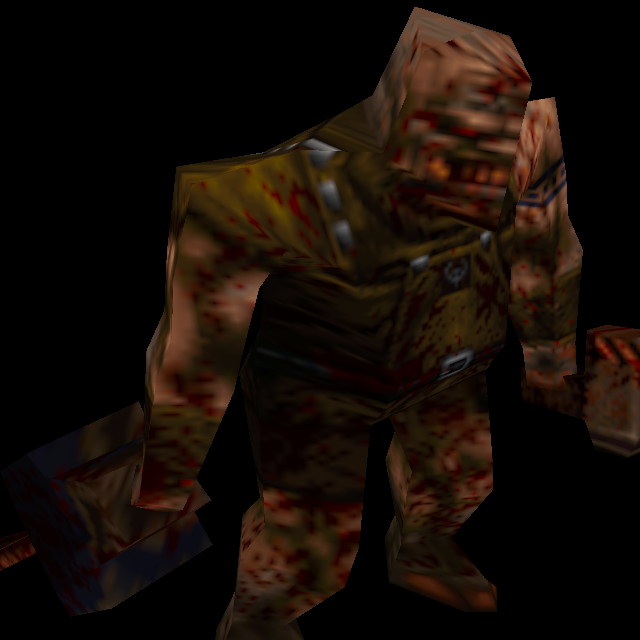
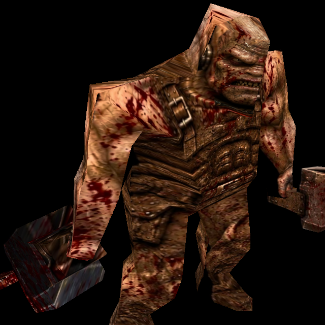
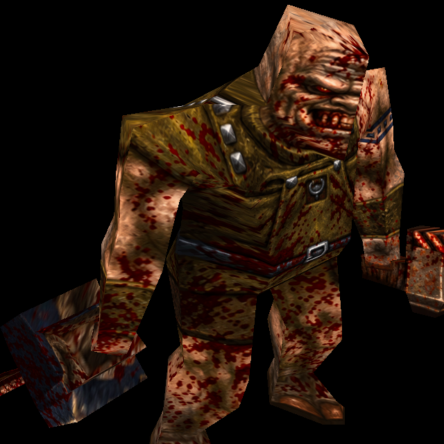
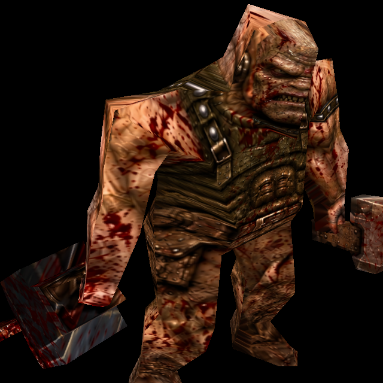
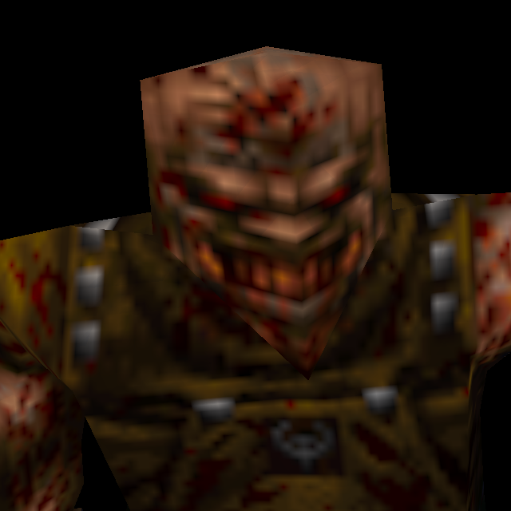
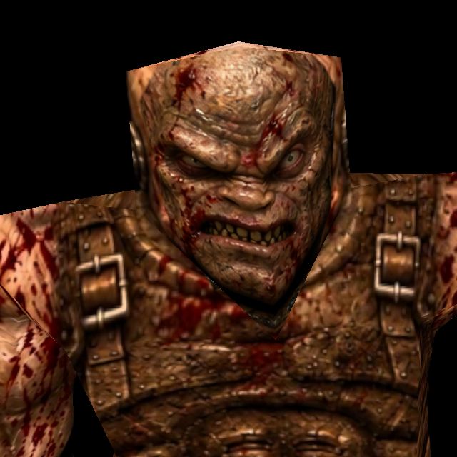
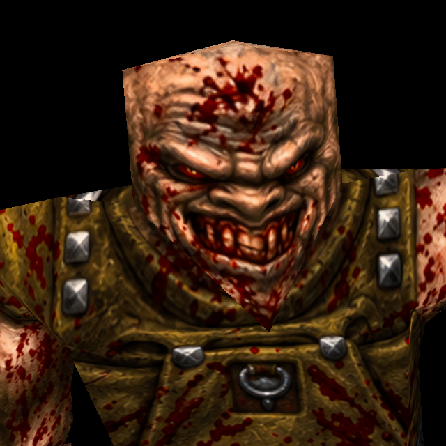
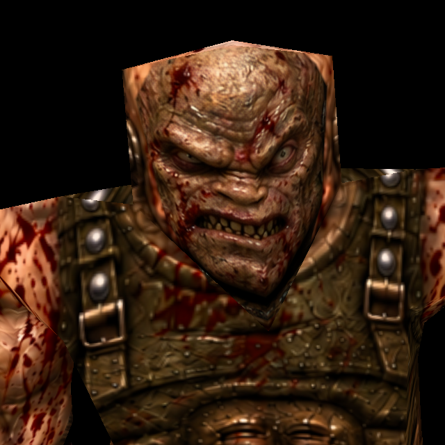
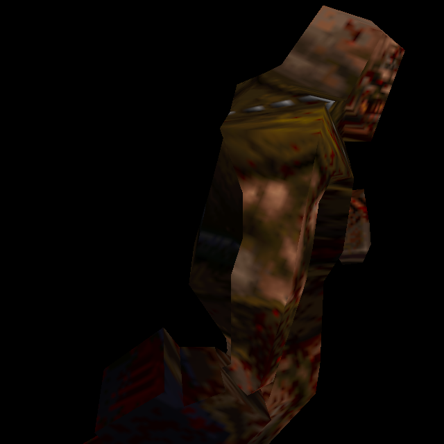
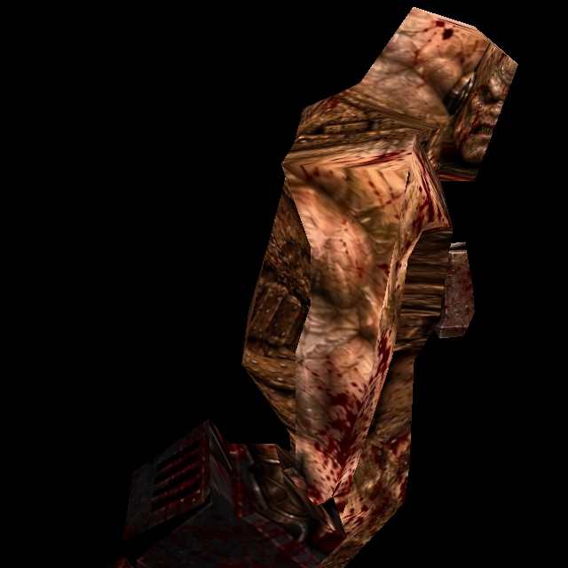
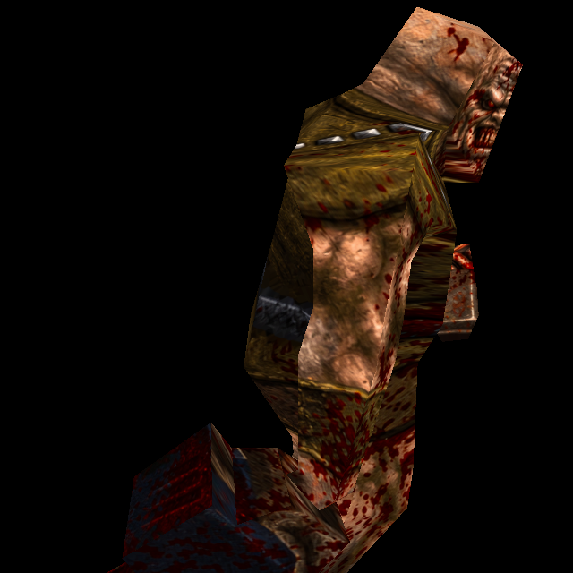
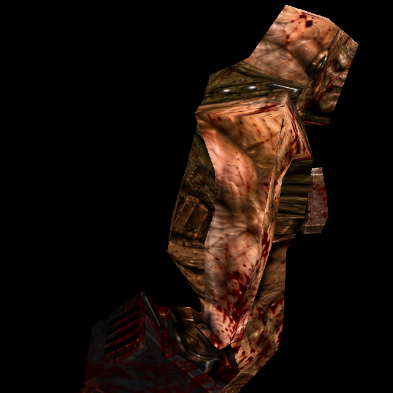
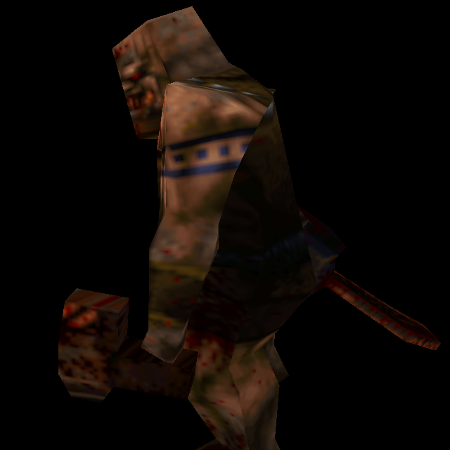
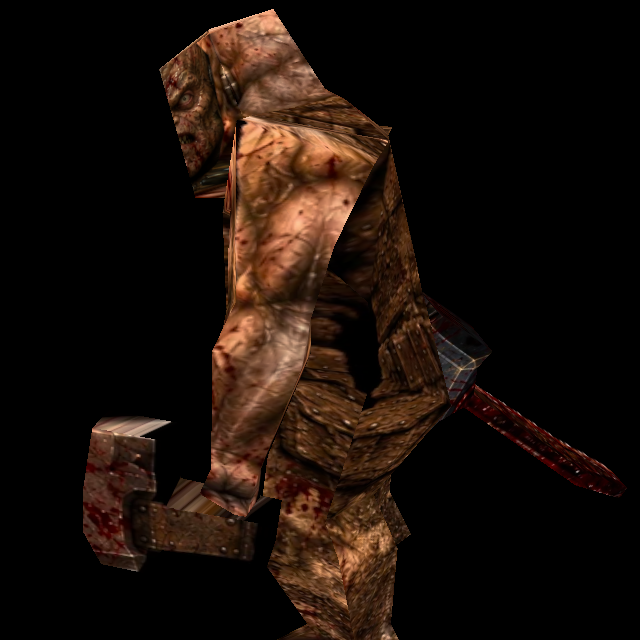
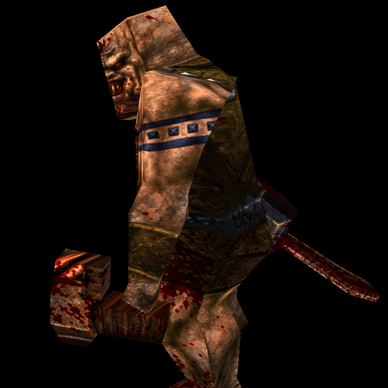
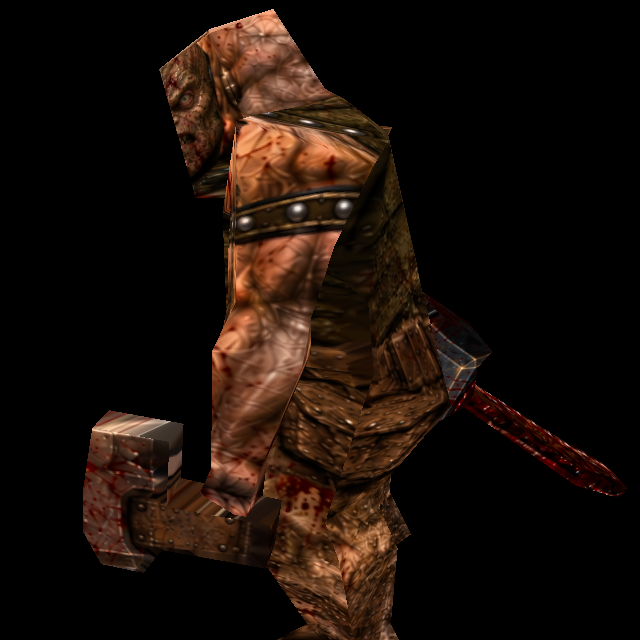
Original mesh and UVs are unchanged. Rendering checks:33/33. This verifies the comparison, not visual acceptance. Renderer receipt